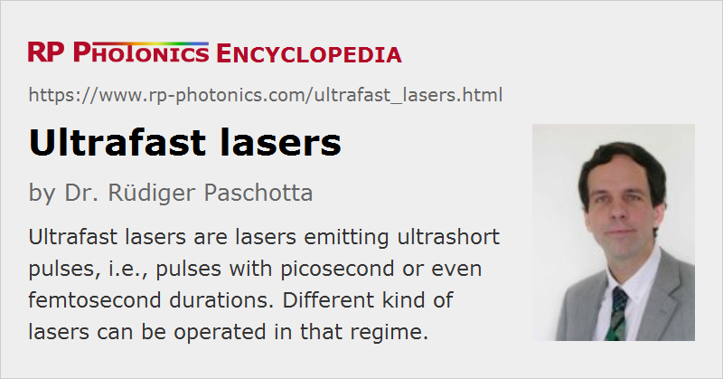

Ultrafast Lasers
Definition: lasers emitting ultrashort pulses
Alternative terms: femtosecond lasers, picosecond lasers
More specific terms: picosecond lasers, femtosecond lasers, mode-locked lasers, mode-locked fiber lasers, mode-locked diode lasers, titanium–sapphire lasers
German: Ultrakurzpulslaser
Categories: lasers, light pulses
How to cite the article; suggest additional literature
Author: Dr. Rüdiger Paschotta
The term ultrafast lasers is used for different kinds of lasers and laser systems:
- There are mode-locked lasers emitting ultrashort pulses, i.e. pulses with durations of femtoseconds or picoseconds: mostly below 100 ps, often even well below 100 fs. These are nearly always mode-locked lasers, although e.g. gain switching can also provide ultrashort pulses. Typical pulse repetition rates are of the order of 100 MHz, but it is also possible to have only a few megahertz or many gigahertz.
- In some cases, one employs cavity dumping for obtaining pulse trains with higher pulse energy at a lower pulse repetition rate (e.g. 1 MHz instead of 100 MHz).
- The term is also used for ultrafast laser systems, comprising an ultrafast laser and some kind of pulse amplifier. In some cases, the high repetition rate pulse train of a mode-locked laser is just amplified to a higher power level, raising the pulse energy as much as the average power. In other cases, the pulse repetition rate is substantially reduced with a pulse picker. The pulse energy can then be much higher; in extreme cases, it is multiple joules, and the peak power can be extremely high (in the terawatt or even petawatt region).
A more precise term is actually ultrashort pulse lasers; such lasers utilize ultrafast processes, but are not ultrafast themselves.
Types of Ultrafast Lasers
The most important types of ultrafast lasers (without amplifiers) are briefly listed in the following:
- Titanium–sapphire lasers, often Kerr lens mode-locked, can generate the shortest pulses with durations down to approximately 5 fs. Their average output power of typically hundreds of milliwatts, combined with a pulse repetition rate of e.g. 80 MHz and a pulse duration of some tens of femtoseconds or shorter, leads to an enormous peak power. Unfortunately, Ti:sapphire lasers require pump light from some green laser, which makes them more complex and expensive.
- There are various kinds of mode-locked diode-pumped bulk lasers, based on, e.g., ytterbium-doped (crystals or glasses) or chromium-doped laser crystals. They are often passively mode-locked with a SESAM, a semiconductor saturable absorber. Although the pulse durations are not as short as those possible with Ti:sapphire lasers, there are diode-pumped ultrafast lasers covering wide parameter regions in terms of pulse duration, pulse repetition rate, and average power (see below).
- Fiber lasers based on rare-earth-doped glass fibers can also be passively mode-locked, e.g. using nonlinear polarization rotation or a SESAM. Due to fiber nonlinearities, they are more limited than bulk lasers in terms of average power and particularly peak power, but may conveniently be combined with a fiber amplifier. The article on mode-locked fiber lasers gives more details.
- Mode-locked dye lasers are still sometimes used, particularly as tunable lasers in unusual wavelength regions. However, they have mostly been replaced with solid-state lasers.
- Mode-locked diode lasers can either be monolithic devices or external-cavity diode lasers, and may be actively, passively or hybrid mode-locked. Typically, mode-locked diode lasers operate at high (multi-gigahertz) pulse repetition rates with moderate pulse energy, and are used in optical fiber communications.
See the article on ultrafast amplifiers for common type of amplifiers, including both laser amplifiers and parametric amplifiers.
Physical Phenomena
The following phenomena of ultrafast optics and ultrafast laser physics are most relevant in ultrashort pulse lasers:
- The Kerr effect leads to self-phase modulation, which is a refractive index change which instantly follows the pulse intensity. It also allows for Kerr lens mode locking. Related nonlinearities such as Raman scattering and self-steepening occur when the nonlinearity has a finite response time. Chromatic dispersion has a great influence on the effect of such nonlinearities on the pulse formation.
- Saturable absorbers used for passive mode locking introduce optical losses which are reduced for high optical intensities. Even for so-called slow absorbers, the change in losses usually recovers within picoseconds after the passage of a pulse.
The research area of ultrafast lasers and their applications is called ultrafast laser physics and ultrafast optics. It deals with all kinds of effects occurring in these lasers, but also with phenomena which can be investigated using ultrashort laser pulses. Examples of such application areas are high-intensity physics (→ high harmonic generation), frequency metrology, laser spectroscopy, and terahertz science. There is also a wide range of industrial applications, which have become more attractive with the advent of compact, powerful and cost-effective mode-locked lasers, and includes such diverse areas as femtosecond material processing (particularly micromachining, waveguide writing), medical treatments (e.g. in ophthalmology: femto-LASIK), laser microscopy and tomography, metrology (e.g. with frequency combs), characterization of high-speed electronics with electro-optic sampling, terahertz spectroscopy via optical sampling, and optical fiber communications.
Developments in the Field of Ultrashort Pulse Generation
The field of ultrashort pulse generation has had roughly three decades to develop and can thus be considered relatively mature. Some of the most important developments which are more or less finished are listed in the following:
- Although dye lasers dominated the field in earlier times, these have been nearly completely replaced with long-lived, powerful and efficient diode-pumped solid-state lasers. Basically only for a few special spectral regions are dye lasers still used. Their competitors are synchronously pumped optical parametric oscillators.
- An important technological development is that of semiconductor saturable absorber mirrors (SESAMs) [11] as very versatile devices mainly for passive mode locking. Although such devices have been used since the early 1990s, their benefits were later greatly increased by improved SESAM designs, a wider range of available semiconductor materials, improved fabrication techniques, and particularly by a much improved understanding of their optimum use – particularly in extreme parameter regions. Today, SESAMs can be used in very wide parameter regions concerning pulse duration, laser wavelength and power level.
- The pulse duration achievable with solid-state lasers (without external pulse compression) has come down to the region around 5.5 fs, corresponding to about two optical oscillation cycles (few-cycle pulses) [5, 6]. This is done with Kerr-lens mode-locked titanium–sapphire lasers. The resulting optical spectra are extremely wide, with ultrabroad bandwidths of the order of an octave (octave-spanning spectra), even though the full width at half-maximum (FWHM) is usually somewhat smaller.
- Further shortening of ultrashort pulses is possible with pulse compression techniques. Advanced compression setups allow for pulse durations below 3 fs (although the concept of pulse duration becomes nontrivial in this parameter regime). The technique of high harmonic generation even allows the generation of attosecond pulses in the extreme ultraviolet spectral region.
- Diode-pumped solid-state lasers, particularly those based on ytterbium, have been developed for extremely high average output powers of up to 80 W [10, 12] and for pulse energies of multiple microjoules [13]. This progress was based on thin-disk laser heads, an improved understanding of Q-switching instabilities, damage issues of saturable absorbers, resonator design, and most importantly a solid understanding of the complicated interplay of all these aspects.
- Both Nd:YVO4 lasers and erbium-doped bulk lasers with miniature resonators have been developed for the generation of pulse trains with extremely high pulse repetition rates of tens of gigahertz or even well above 100 GHz [9]. This required mainly optimized resonator designs and an improved understanding of Q-switching instabilities. Such lasers emit picosecond pulses with moderate average output powers, normally well below 1 W.
- After many years where mode-locked semiconductor lasers were limited to fairly low output powers, novel optically pumped passively mode-locked vertical external cavity surface-emitting lasers (VECSELs) have been demonstrated to be suitable for a combination of high (multi-gigahertz) pulse repetition rates with multi-watt average output powers.
- Nonlinear frequency conversion (e.g. with optical parametric oscillators) has been proven to work well even at very high average power levels. In some respects, the setups can even become simpler than those of lower-power devices. Access to a wider range of wavelengths is crucial for some applications, such as laser projection displays (→ RGB sources).
Further developments can be expected in the near future:
- The choice of solid-state gain media is still growing. New laser crystal materials with interesting properties have been developed, which promise superior performance or even entirely new achievements. For example, new ytterbium-doped gain media such as sesquioxides and tungstates could prove even better than Yb:YAG for thin-disk lasers with even higher powers in ultrashort pulses, or for shorter pulses at high power levels. On the other hand, ultrabroadband gain media such as Cr2+:ZnSe should be suitable for the generation of pulses with 20 fs duration or less in the spectral region around 2.7 μm, even though this expectation has not been fulfilled, without the reason being very clear so far. (Excessive nonlinearity is perhaps an explanation.)
- Even without improved gain media, it should be possible to push passively mode-locked thin-disk lasers to even higher power levels; values beyond 100 W have already been achieved [14, 15].
- Mode-locked fiber lasers [16] have been showing impressive advances in performance for several years. It is to be expected that this development will continue. See also the article on fiber lasers versus bulk lasers.
- Ultrafast amplifier devices for lower repetition rates (mainly diode-pumped regenerative amplifiers) will become more and more important for laser material processing, e.g. in the form of micromachining.
- Having been around only for a few years, passively mode-locked VECSELs (see above) surely have the potential for significant further advances in performance, particularly in the area of multi-gigahertz repetition rates combined with multi-watt output powers and/or sub-picosecond pulse durations. Furthermore, the application of wafer-scale technologies may allow mode-locked VECSELs to be fabricated at very low cost, making possible new application fields with stringent cost limits.
Concerning applications, it is to be expected that many more ideas will be generated. Note that certain parameter regions have only recently be accessible with laser sources, so that those working on the application side can start thinking about using such sources, some of which should soon become commercially available. It appears realistic to expect that ultrafast technology will gain further importance and permit new exciting developments.
Applications of Ultrafast Lasers
The output of an ultrafast laser has various remarkable properties which are of interest for a wide range of applications:
- In some cases, the crucial property is the ultrashort pulse duration itself – for example, for pump–probe measurements, for distance measurements with lasers with the time-of-flight method, for electro-optic sampling, the generation and detection of terahertz radiation, or for optical fiber communications with soliton pulses.
- In other cases, one exploits the very high peak power, which results from the strong temporal concentration of a moderate amount of optical energy. That combined with the high focusability can result in extremely high optical intensities. Under such conditions, the material hit on a work sample may be evaporated very quickly before the induced heat can be dissipated via thermal conduction. This is particularly relevant for industrial laser material processing of small parts (micromachining) or with very high quality, and similarly in some medical applications such as eye surgery and other forms of microsurgery. Another example is laser-induced breakdown spectroscopy (LIBS). Further, high peak powers greatly facilitate the simple and efficient nonlinear frequency conversion of light pulses, e.g. for high-power RGB displays (→ RGB sources) and for laser spectroscopy. Particularly extreme optical intensities are used in some fundamental science experiments and in laser fusion research.
- In laser microscopy, one often exploits the temporal and spatial concentration of optical energy. Special variants (STED microscopy), which work only with ultrashort pulses, can even achieve sub-wavelength resolution.
- Sometimes it is highly relevant that there is a high degree of coherence between subsequent pulses. As a result of that, the optical spectrum has the form of a frequency comb. The low-noise properties of such frequency combs are exploited in optical metrology, e.g. for building extremely precise optical clocks. The role of a frequency comb source in such a clock can e.g. be to related a highly stable optical frequency to a microwave frequency, or to compare different optical frequencies.
- The broad optical bandwidth of ultrashort pulse sources is sometimes relevant, e.g. for avoiding laser speckle effects in displays, or for high resolution in coherence radar and optical coherence tomography – although in most cases one would prefer a simpler solution such as a wavelength-swept laser.
Suppliers
The RP Photonics Buyer's Guide contains 98 suppliers for ultrafast lasers. Among them:
Questions and Comments from Users
Here you can submit questions and comments. As far as they get accepted by the author, they will appear above this paragraph together with the author’s answer. The author will decide on acceptance based on certain criteria. Essentially, the issue must be of sufficiently broad interest.
Please do not enter personal data here; we would otherwise delete it soon. (See also our privacy declaration.) If you wish to receive personal feedback or consultancy from the author, please contact him e.g. via e-mail.
By submitting the information, you give your consent to the potential publication of your inputs on our website according to our rules. (If you later retract your consent, we will delete those inputs.) As your inputs are first reviewed by the author, they may be published with some delay.
Bibliography
| [1] | F. Krausz et al., “Femtosecond solid-state lasers”, IEEE J. Quantum Electron. 28 (10), 2097 (1992), doi:10.1109/3.159520 |
| [2] | P. J. Delfyett et al., “High-power ultrafast laser diodes”, IEEE J. Quantum Electron. 28 (10), 2203 (1992), doi:10.1109/3.159528 |
| [3] | P. M. W. French, “The generation of ultrashort laser pulses”, Rep. Prog. Phys. 58, 169 (1995), doi:10.1088/0034-4885/58/2/001 |
| [4] | S. Backus et al., “High power ultrafast lasers”, Rev. Sci. Instrum. 69, 1207 (1998), doi:10.1063/1.1148795 |
| [5] | D. H. Sutter et al., “Semiconductor saturable-absorber mirror-assisted Kerr lens modelocked Ti:sapphire laser producing pulses in the two-cycle regime”, Opt. Lett. 24 (9), 631 (1999), doi:10.1364/OL.24.000631 |
| [6] | U. Morgner et al., “Sub-two cycle pulses from a Kerr-lens mode-locked Ti:sapphire laser”, Opt. Lett. 24 (6), 411 (1999), doi:10.1364/OL.24.000411 |
| [7] | C. Hönninger et al., “Ultrafast ytterbium-doped bulk lasers and laser amplifiers”, Appl. Phys. B 69, 3 (1999), doi:10.1007/s003400050762 |
| [8] | E. Sorokin et al., “Diode-pumped ultrashort-pulse solid-state lasers”, Appl. Phys. B 72, 3 (2001), doi:10.1007/s003400000464 |
| [9] | L. Krainer et al., “Compact Nd:YVO4 lasers with pulse repetition rates up to 160 GHz”, IEEE J. Quantum Electron. 38 (10), 1331 (2002), doi:10.1109/JQE.2002.802967 |
| [10] | E. Innerhofer et al., “60 W average power in 810-fs pulses from a thin-disk Yb:YAG laser”, Opt. Lett. 28 (5), 367 (2003), doi:10.1364/OL.28.000367 |
| [11] | U. Keller, “Recent developments in compact ultrafast lasers”, Nature 424, 831 (2003), doi:10.1038/nature01938 |
| [12] | F. Brunner et al., “Powerful RGB laser source pumped with a mode-locked thin-disk laser”, Opt. Lett. 29 (16), 1921 (2004), doi:10.1364/OL.29.001921 |
| [13] | S. V. Marchese et al., “Pulse energy scaling to 5 μJ from a femtosecond thin-disk laser”, Opt. Lett. 31 (18), 2728 (2006), doi:10.1364/OL.31.002728 |
| [14] | C. J. Saraceno et al., “Ultrafast thin-disk laser with 80 μJ pulse energy and 242 W of average power”, Opt. Lett. 39 (1), 9 (2014), doi:10.1364/OL.39.000009 |
| [15] | T. Nubbemeyer et al., “1 kW, 200 mJ picosecond thin-disk laser system”, Opt. Lett. 42 (7), 1381 (2017), doi:10.1364/OL.42.001381 |
| [16] | M. E. Fermann, “Ultrafast fiber oscillators”, in Ultrafast Lasers: Technology and Applications (eds. M. E. Fermann, A. Galvanauskas, G. Sucha), Marcel Dekker, New York (2003), Chapter 3, pp. 89–154 |
| [17] | R. Paschotta and U. Keller, “Passively mode-locked solid-state lasers”, in Solid-State Lasers and Applications (ed. A. Sennaroglu), CRC Press, Taylor and Francis Group, LLC (2007), Chapter 7, pp. 259–318 |
| [18] | For German readers: R. Paschotta, “Ultrakurzpuls-Festkörperlaser – eine vielfältige Familie”, Photonik 1 / 2006, p. 70 |
| [19] | R. Paschotta, “Laser sources for ultrashort pulses”, Laser Technik Journal 4 (1), p. 49 (2007) |
See also: ultrafast laser physics, pulse generation, mode locking, passive mode locking, mode-locked lasers, Kerr lens mode locking, titanium–sapphire lasers, femtosecond lasers, picosecond lasers, ultrashort pulses, ultrafast amplifiers, optical sampling, laser applications, The Photonics Spotlight 2008-06-20
and other articles in the categories lasers, light pulses

This encyclopedia is authored by Dr. Rüdiger Paschotta, the founder and executive of RP Photonics Consulting GmbH. How about a tailored training course from this distinguished expert at your location? Contact RP Photonics to find out how his technical consulting services (e.g. product designs, problem solving, independent evaluations, training) and software could become very valuable for your business!
|  |
If you like this page, please share the link with your friends and colleagues, e.g. via social media:
These sharing buttons are implemented in a privacy-friendly way!